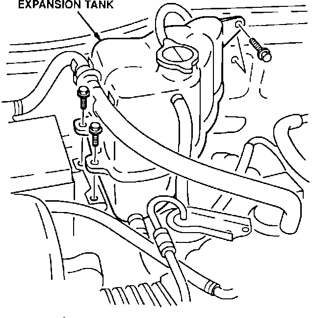
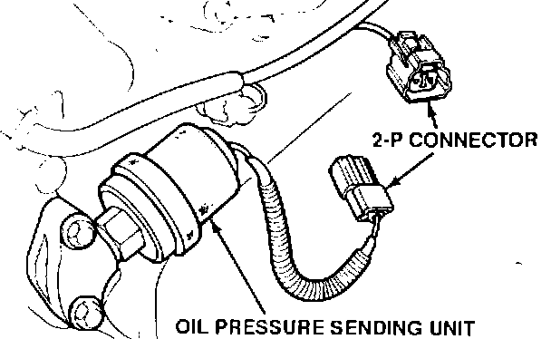
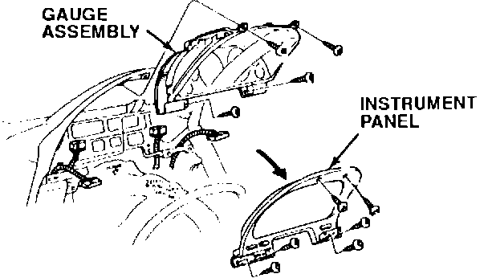
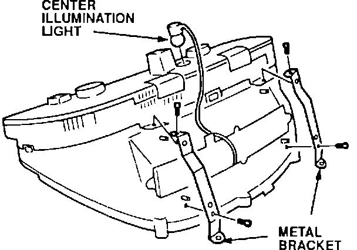
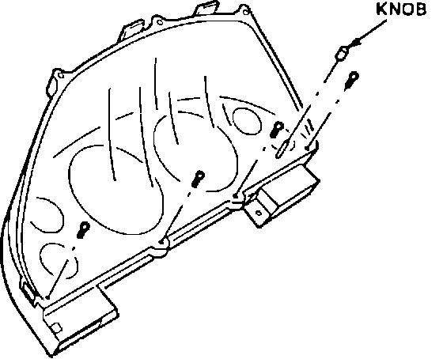
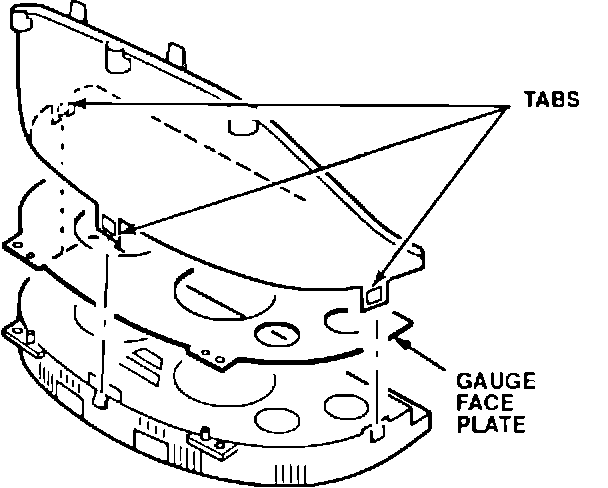
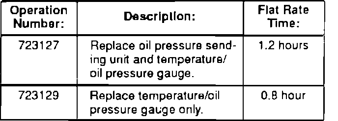

Low Oil Pressure Gauge Reading
9220acura01
BULLETIN NO.
91-008
March 2, 1992
YEAR MODEL VIN APPLICATION
1991 NSX Up to
JH4NA1...MT003162
Low Oil Pressure Gauge Reading
(Supersedes 91-008, dated April 1, 1991)
SYMPTOM
Customer complaint that the oil pressure gauge reading is less than 1 kg-cm at hot idle.
CORRECTIVE ACTION
^ For vehicles up to VIN JH4NA1 ... MT000886, replace both the oil pressure gauge sending unit and the temperature/oil pressure gauge with the parts listed in PARTS INFORMATION.
NOTE:
Check the warranty repair history of the vehicles within the above VIN range; (refer to page 5.24-1 of the Acuralink DCS User's Manual). If the sending und has already been replaced, replace only the gauge.
^ For vehicles between VIN JH4NA1 ... MT000887 and ... MT003162, replace only the gauge.
Oil Pressure Gauge Sending Unit

1. Remove the expansion tank mounting bolts and move the tank to one side.

2. Disconnect the 2-P connector,then remove the old sending unit and O-ring.
3. Install the new sending unit and O-ring listed in tbe PARTS INFORMATION.
NOTE:
The O-ring recess is in the oil sending unit mount. It may be necessary to hold the O-ring in place with a small amount of grease.
4. Reinstall the expansion tank.
Temperature/Oil Pressure Gauge
1. Refer to page 20-44 of the service manual for the procedure to remove the following items:
- Dashboard Lower Panel (driver's side)
- Knee Bolster Pad
- Knee Bolster (stamped steel panel)
2. Extend the steering wheel all the way out and remove the upper and lower steering column covers. Lift the steering column down after removing the covers.
3. Disconnect the connectors from the headlight retractor switch/dash brightness controller and the TCS switch. Remove the instrument panel.

4. Remove the four screws holding the gauge assembly to the dashboard, then unplug the two connectors from the gauge assembly. Remove the gauge assembly by sliding it to the right of the steering wheel.

5. Remove the two metal brackets from the top of the gauge assembly, then remove the center illumination light socket.

6. Remove the four screws from the bottom of the clear plastic cover, then rernove the trip odometer reset knob.

7. Separate the gauge assembly by carefully releasing the three tabs, then remove the gauge face plate.
8. Remove the six screws holding the temperature/oil pressure gauge assembly and remove the gauge.
9. Reassemble the gauge assembly with the new temperature/oil pressure gauge. Install the gauge assembly in the reverse order of removal.
PARTS INFORMATION
Oil Pressure Gauge
Sending Unit: P/N 37245-PR7-A02
O-ring, 13 x 1.5 mm: P/N 91319-PR3-003
Temperature/Oil
Pressure Gauge: P/N 78150-SL0-003
WARRANTY INFORMATION

In warranty: The normal warranty applies.
Out-of-warranty: Any repair performed after warranty expiration may be eligible for goodwill consideration by the District Service Manager. You must request consideration, and get the DSM's decision, before starting work.
Failed P/N: P/N 37245-PR7-A01
Defect code: 039
Contention code: B99